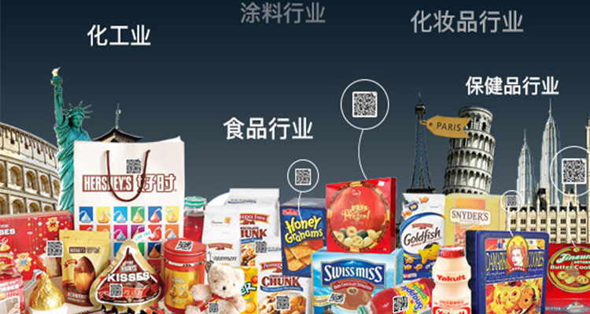

每年的315晚会，都特别令人期待，因为你不知道，究竟哪些企业和商品里暗藏着不为人知的秘密。大到生态环境，小到衣食住行，每年都会有大量的不法商家在315这一天被火眼金睛的打假卫士们“挂于集市”，也正是因为有着这样的节日，所以我们才能有着更安全的消费环境。
1898年，全世界第一个消费者组织在美国成立，1936年，建立了全美的消费者联盟。第二次世界大战后，各种反映消费者利益和要求的组织，在一些发达国家相继出现。在此基础上，1960年，国际消费者联盟组织宣告成立。之后，消费者运动更加活跃，许多发展中,有些国家也建立了消费者组织，使消费者运动成为一种全球性的社会现象，全世界已有90多个国家共300 多个消费者组织在开展活动。
选择3月15日作为“国际消费者权益日”，不仅仅是为了扩大宣传，也是为了促进各国消费者组织的合作和交往，在国际范围内引起重视，推动保护消费者的活动。就像现在我们在淘宝剁手的时候，都会看到“退一赔三”、“七天无理由退换货”这些保障消费者的措施，相比于以前消费者有苦说不出的时候，消费者的权益保障体系也越来越完善了。
1、今天记得看晚会哦；
2、消费者权益日是每一名消费者的节日，所以如果被不法商家侵犯了消费者的权利，那么拿起法律武器来反击他们！